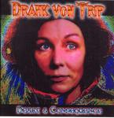

| Artist: | Drahk Von Trip |
| Title: | Heart & Consequence |
| Label: | Transubstans Trans 007 |
| Length(s): | 59 minutes |
| Year(s) of release: | 2005 |
| Month of review: | [04/2006] |
| 1) | One Of A Kind | 5.59 |
| 2) | Autumn | 7.13 |
| 3) | Anger | 5.09 |
| 4) | Ode To A Godess | 6.32 |
| 5) | Long Distance Call | 6.27 |
| 6) | Gahn | 5.17 |
| 7) | Daddy's Dead | 5.29 |
| 8) | R.A.M.M. Wow We're Really Expressing Ourselves | 3.39 |
| 9) | In A World Of Trouble | 6.59 |
| 10) | I Want To Tell You | 6.51 |
Autumn starts percussive and ethereal, with even something akin accordion to be heard. Again, Susann shows the dramatic strength of her voice, when she sings almost solely. Then the song really gets going, showing both good songmanship and a knack for keeping the song interesting and varied. There is plenty of variation here, but never an awkward transition. The highlight of the song is the guitar that shines in different ways: twangy, riffing, and all manner.
Anger opens with sharp and noisy guitar. Then the drums set a high pace, but subdued. The vocalist sings in vocoded style, reminding me of the singer of Portishead, but a bit more manic. Again, very good, this.
Ode To A Godess is another excellent psychedelic tune with mesmerizing guitar, plenty of rhythmic drive and a slow build from to Hawkwind style driving rock (hmm, maybe a bit less straightforward than that). Plenty of swirling synths as well, with plenty of gurgle and slurp. Then, halfway, we drop down again to ballad level intensity, slowly building up again.
On Long Distance Call, the singer gets a call from the Other Side, or is it simply the other side? Anyway, on this song, the band lightens a bit up, although it does have it share of intenser moments, and moments in which there's an air of flamenco, after which the guitar takes it away, and the violin adds it's two krones.
Gahn has a strong tense feel, with Susann telling her story. Again, she shows her strong personality that really adds to the music. Sometimes she growls, but in some way she never overshoots what I expect to be her target. Daddy's Dead is a weird one. High pace, but with some quirky melodies threaded into it. The vocalist has time off. There is an avant-gardistic feel to this one, although that does not mean that it doesn't rock, because it does.
R.A.M.M. Wow We're Really Expressing Ourselves has a fine sense of irony to the title, and again no vocals. The rhyhtm section is strong and driving (as it has been thus far throughout the album), with element of King Crimson thrown in for good measure. At times, there is a strong spaghetti western like feel about the whole affair. In A World Of Trouble continues in the same vein, although my cd was protesting a bit at this point, and I can't give you the whole story.
I Want To Tell You is a slow style ballad, with twangy guitars and a bit of the sad feel of Anekdoten. The music stays rather relaxed on this one, almost a psychedelic take on Portishead. The pace goes towards the end, but it stays lightfooted.